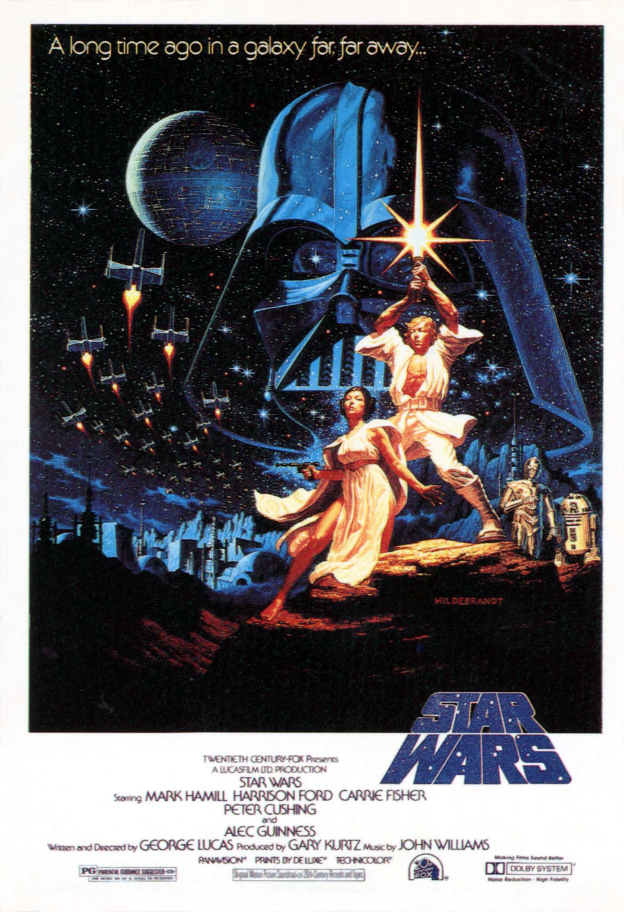

Top $10 Theater
 星際大戰四部曲：曙光乍現（Star Wars Episode IV: A New Hope）—1977 《星際大戰》（Star Wars），在1981年後被重新命名為《星際大戰四部曲：曙光乍現》（Star Wars Episode IV: A New Hope）， 是1977年的美國太空歌劇史詩片，由喬治·盧卡斯編寫及執導，是《星際大戰》系列最初的一集（按劇情排序是第四集）。 電影由馬克·漢米爾、哈里遜·福特、嘉莉·費雪及亞歷·堅尼斯主演，於1977年5月25日公映，並經過數次變革， 分別於1979年、1981年、1982年、1997年、2000年及2004年重新上映。喬治·盧卡斯曾坦言本片即是參考日本黑澤明導演的1958年電影 《戰國英豪》（隠し砦の三悪人）所創作出來的。劇情重點在反抗軍同盟在莉亞公主（嘉莉·費雪 飾） 的帶動下， 計劃企圖摧毀銀河帝國的空間站 — 死星。這次計劃破壞了農場工人路克·天行者（馬克·漢米爾 飾）與世隔絕的生活， 他無意間得到一對擁有偷到死星建築計劃的機器人。當帝國開始毀滅性尋找失蹤的機器人，天行者同意陪同絕地大師 歐比王·肯諾比（亞歷·堅尼斯 飾）執行返回死星的計劃，並跟反抗軍同盟一起從銀河帝國的暴政中拯救整個銀河系。 通貨膨脹計算器（1977-2015，單位：美元）：